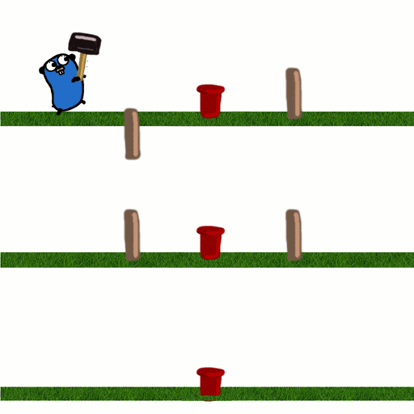
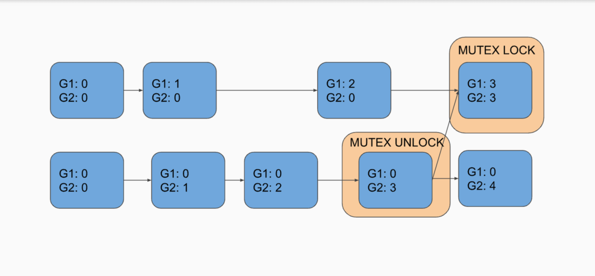
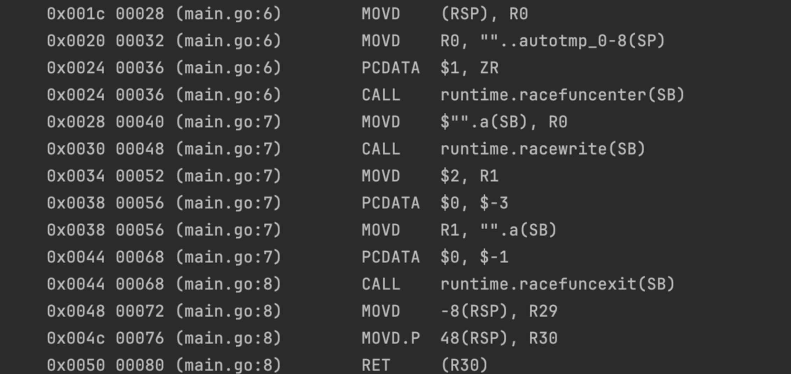
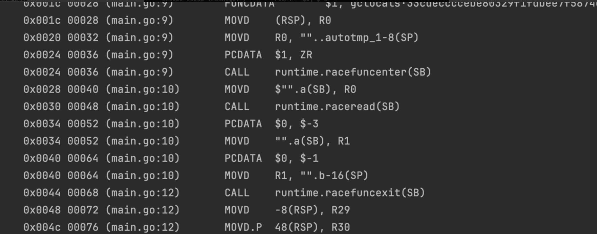
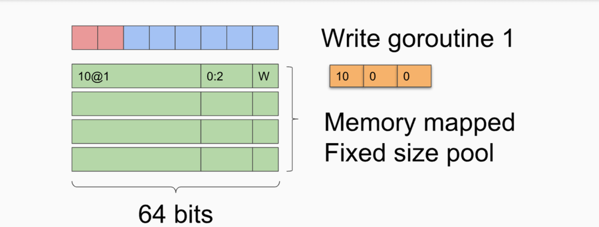
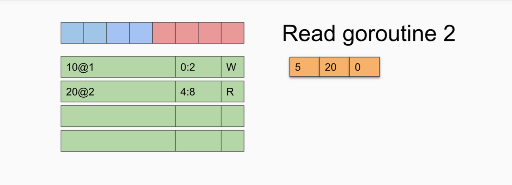
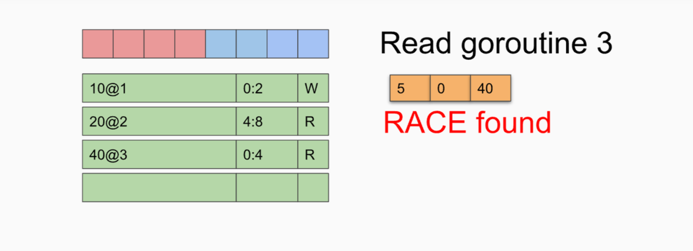

数据竞争（Data Race）

什么是数据竞争
当两个 goroutine 并发访问同一个变量，并且至少有一个访问是写入时，就会发生数据竞争。
数据竞争是并发系统中最常见且最难调试的错误类型之一。有竞争的 Go 程序的行为是未定义行为，理论上出现什么情况都是正常的。
典型的数据竞争
循环变量闭包问题
1 | func main() { |
每次循环都基于一个闭包函数创建一个新的goroutine，这些goroutine都捕获了外面的循环变量i（修正一下，Go1.22之后就没这个问题了，循环变量改成每轮独立），这就在多个goroutine之间建立起对i的竞争。
修复：
1 | func main() { |
意外共享变量
1 | func ParallelWrite(data []byte) chan error { |
不注意的使用了err变量，类似的也有命名返回值。
未受保护的全局变量
1 | var service map[string]net.Addr |
全局变量map并发读写，值得一提的是map本身做了并发检测，并发读写会抛出throw无法recover。
修复：加锁或使用sync.Map。
未受保护的基本类型变量
1 | type Watchdog struct{ last int64 } |
数据竞争同样会发生在原始类型变量上（bool，int，int64等），但无法保证原子性（64位系统下，大部分处理器在保证内存对齐时，64位赋值理论是原子的，但也仅仅是理论上，除非编译器或硬件供应商另有规定，否则每个操作都应该被认为是非原子的，并且还有可见性问题），编译器优化，指令重排等问题。
不同步的send和close
1 | c := make(chan struct{}) // or buffered channel |
根据 Go 内存模型，通道上的发送发生在该通道的相应接收完成之前。要同步发送和关闭操作，要使用接收操作来保证在关闭之前完成发送：
1 | c := make(chan struct{}) |
拷贝问题
1 | func foo(values []string) { |
需要注意的是，像上述代码，即使给result写操作加锁了，但是忽略了把result当参数传入函数时，需要读变量，此时需要读锁，类似的还有方法值接收器。
1 | type Counter struct { |
同样也是拷贝引起的读操作，counter.get 实际上为Counter.get(*counter) 传递了counter副本，修复方法是把counter.get 改为指针接收器。
切片问题
切片是Go内置的复合数据类型，与传统数组相比，切片具备动态扩容的能力，在Go语言中得到了广泛的应用。但灵活的同时，切片也是Go语言中“挖坑”最多的数据类型之一，大家在使用切片时务必认真细致，稍不留神就可能犯错。
1 | func main() { |
错误的使用waitGroup
1 | func doCleanup(err *error) { |
这个例子是defer函数在函数返回时的执行顺序问题，导致两个goroutine在err这个变量上形成数据竞争，wg.Wait结束后，goroutine可能仍然在执行doCleanup逻辑。
良性的数据竞争？
良性数据竞争指存在数据竞争，但其对应用程序的运行并不影响。一些多线程程序会故意允许数据竞争，以获得更好的性能（不用加锁之类的操作）。
举个例子：
1 | var pflag []bool |
这是一个检查是否为质数的程序。
数据竞争检测器会发生报警，第 31 行的写入与第 27 行pflag[]的读取之间存在数据竞争。不过，此数据竞争是良性的，因为它不会影响最终结果的正确性。在第 27 行，线程检查给定i值时是否等于true。如果等于true，则表示i是已知合数。因此，无需检查v是否能被i整除；我们只需检查 v 是否能被某个质数整除。因此，如果等于零，则线程继续处理i的下一个值。
从正确性角度来看，多个goroutine检查同一pflag[]元素并同时写入该元素并不重要。pflag[]元素的初始值为true。当线程更新该元素时，它们会为其赋值false。如果在此期间，另一个线程将零赋给同一pflag[]元素（第31行），则最终结果不会改变。本质上，这意味着第一个线程不必要地执行了第 30-33 行。（需要依赖处理器赋值的原子性，除非处理器或编译器有明确规定，否则仍然是未定义行为）。
良性数据竞争的讨论已经是个老话题了，估摸来来回回也有讨论了有十来年了。
良性数据竞争到底存不存在，这个就仁者见仁智者见智了，仅从我们业务角度出发，我是不建议写任何可能有数据竞争的代码的，原因如下：
-
良性的数据竞争，大部分都是为了不加锁操作，提高性能，但是业务应该优先保证正确性，存在任何的未定义行为都是难以容忍的。在大多数情况下，编写几行代码要比查找、调试罕见的数据竞争并在事后进行处理更简单。
-
数据竞争检测工具会对这样的代码发出警告，想想编译器警告，保持代码干净只是为了不错过重要的警告。数据竞争也是一样，无竞争代码将允许您快速识别新错误，甚至可以设置连续的数据竞争自动测试，减少不必要的噪音。
-
您的代码被作为起点，在其上扩展构建，并由于您最初的“良性”的数据竞争而导致一场灾难，就像破窗效应一样。我们很难保证代码的后续迭代不会改变其最初的设想。
数据竞争检测器（Data Race Detector）
概述
看了这么多data race的案例，其实可以发现，很多问题都很细微，如果不细致分析，很难识别出来，更别说在一堆复杂业务逻辑中，排查出存在data race的逻辑进行修复了。那么有什么工具可以协助排查吗？这就是Go官方提供的Data Race Detector。
怎么使用
添加-race 到命令中即可：
1 | go test -race mypkg // to test the package |
以上面的循环变量闭包问题例子来看下竞争检测器的报告格式：
1 | ================== |
可以看到报告包含了冲突的堆栈以及冲突goroutine创建的堆栈，对于问题排查非常方便。
原理
Go的数据竞争检测器是基于Google一个团队开发的工具ThreadSanitizer(TSan)。第一版TSan的实现发布于2009年。竞争检测分为静态分析和动态分析，出于性能考虑ThreadSanitizer使用的则是动态分析；动态竞争检测有多种方法，ThreadSanitizer 使用的是happens before法。
ThreadSanitizer分为两部分：注入代码与运行时库。
向量时钟
每个 goroutine 并不是只记住自己的逻辑时钟，而是记住上次从另一个 goroutine 收到消息时的逻辑时钟。向量时钟是偏序集，如果两个事件之间有严格的大小关系，则它们之间有happens before关系。否则，它们是并发的。

注入代码
第一部分是在编译阶段配合编译器在源码中注入代码。那么在什么位置注入什么代码呢？ThreadSanitizer会跟踪程序中的每次内存访问，因此TSan会在每次内存访问的地方注入代码（不包括一定不会出现数据竞争的内存，比如只有读的全局变量）。
举个例子：
1 | func main() { |
上面这段代码注入之后，可以看到多个race相关调用：


运行时
TSan的检测借助了一个称为Shadow Word的概念。一个Shadow Word本身是一个64位8字节对象，它代表一个对某个内存地址的访问（读or写）。其本身存储了与此事件相关的逻辑时钟信息，如下图：
| TID（线程 ID） | 16 位（可配置） | |
|---|---|---|
| 向量时钟 | 42 位（可配置） | |
| 写（是否写操作） | 1 位 | |
| 访问大小（1、2、4 或 8） | 2 位 | 这两个可以定位出访问的 |
| 地址偏移（0…7） | 3 位 |
针对每个应用程序的8字节内存，都会有一个Shadow Word Pool对应有一组(N个)Shadow Word
N的取值直接影响带来的开销以及数据竞争检测的“精度”。
一个goroutine1向该块内存的前两个字节进行了写操作，写操作会生成第一个Shadow Word。

此时只有一个Shadow Word，不存在race的可能。
接下来，一个线程goroutine2又针对该块内存的后四个字节进行了一次读操作，读操作会生成第二个Shadow Word。

此次读操作涉及的字节与第一个Shadow Word没有交集，不存在数据竞争的可能。
再接下来，一个线程goroutine3针对该块内存的前四个字节进行了一次读操作生成第三个Shadow Word。

我们看到goroutine1和goroutine3两个线程对该内存块的访问有重叠区域，且goroutine1为写操作，那么这种情况就有可能存在数据竞争。竞争检测算法本质上就是一个状态机，每当发生一次内存访问，都会走一遍状态机。状态机的逻辑也很简单，就是遍历这块内存对应的Shadow Word Pool中的所有Shadow Word，用最新的Shadow Word与已存在的Shadow Word逐一比对，如果存在race，则给出告警。
可以看到此时的goroutine3的goroutine1向量时钟为5，小于内存中上次写入的时钟为10@1，此时的读取不满足happens before（假设每个goroutine的事件按顺序到达，否则，我们无法确定10@1goroutine3的条目是否大于或小于当前向量时钟的goroutine3的条目。这是由算法设计和实现强制执行的）。
但内存访问是高频事件，因此很快Shadow Word窗口就会写满，那么新的Shadow Word存储在哪里呢？在这种情况下，算法会随机删除一个旧的Shadow Word，并将新Shadow Word写入。
局限性
假阴性
竞争检测器没有检测到任何东西。这是否意味着我的代码没有数据竞争错误？
并不是，仍然有不少情况会导致竞争检测器没有检测到错误，例如：
-
竞争检测器只能检查到实际运行到的代码，这次程序执行可能未覆盖部分代码。
-
竞争检测器具有不确定性，许多因素可能导致确切的执行跟踪在每次执行之间有所不同，需要多次执行保证更好的找到问题。
留个思考，看一下这段代码是否有数据竞争，是否会被报告数据竞争？
1 | var count = 0 |
- 从原理可以知道，检测所需的信息会随着时间的推移而被覆盖，从而导致漏报（发生了竞争但未被检测到）。
仅仅是检测数据竞争
需要注意的是数据竞争检测器也只是检测数据竞争，即使所有代码没有数据竞争，仍然可能存在严重的并发编程的错误，例如：
1 | func main() { |
其结果可能是22，也可能是33，因为借助互斥锁mu，保证其中一个访问总是先于另一个访问。下次执行程序时，访问的具体顺序可能会发生变化。
另一个例子：
1 | var Cnt int64 |
这段代码仅仅保证了读取和写入的原子性，并没有保证递增的原子性。
性能损耗
按官方的说法根据不同程序，内存使用量可能会增加 5-10 倍，执行时间可能会增加 2-20 倍，对性能影响极大，一般情况下很难在线上使用，仅在测试的时候开启进行检测。
在长期实践中避免数据竞争
-
在开发测试阶段中添加race，并添加工具来报告发生的data race（目前没找到好用的工具）。
-
提高单测覆盖率，在单测中进行定期检测（性能消耗比较大，每次都检测对开发效率可能影响，可以定期执行）。
-
流水线进行线上流量回放，查找数据竞争。
-
平时多注意数据竞争问题，规避未定义行为，提高代码质量，可读性，code review更容易发现问题。
总结
其实想一想如果代码里存在许多数据竞争，但是也没有发生panic或者是其他报错，正好程序也能跑是一件非常恐怖的事情，指不定哪天就爆雷了，甚至可能引发严重的。因为数据竞争问题的事故不在少数，但又难以发现，也难测试，大家还是需要用好工具，平时提高相应意识，在写并发程序时多加注意。
愿我们的代码没有数据竞争，没有并发bug。
参考文档
https://go.dev/doc/articles/race_detector
https://medium.com/@val_deleplace/does-the-race-detector-catch-all-data-races-1afed51d57fb
https://krakensystems.co/blog/2019/golang-race-detection
https://github.com/google/sanitizers/wiki/ThreadSanitizerAlgorithm